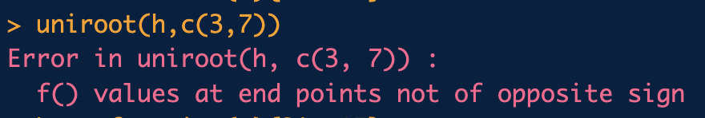

Class 11
Between Class Sessions - Prep for Day 11
Please spend around 2 hours working between class sessions, focusing on the tasks below. Use any extra time to complete KnewtonAlta assignments and/or work on Project tasks.
Pick something from your prep today that you can share with your group in class. It might be something new that you learned. It might be questions you have that are still unanswered, or a question along with what helped you eventually answer it. It might be something tricky that you solved. It might be a review topic that helped you remember something. It might be a conversation you had with AI that was helpful. You will have a chance to share this with your peers during class. Come ready to articulate your thinking and questions.
Preparation
(1) Reading Practice
- Read the Intermediate Value Theorem below.
Intermediate Value Theorem (IVT)
If \(f(x)\) is a continuous function on a closed interval $ [a, b] $, where \(f(a) \neq f(b)\), and \(y_0\) is any \(y\)-value strictly between \(f(a)\) and \(f(b)\), then \(y_0 = f(x_0)\) for some \(x\)-value, \(x_0\), in $ [a, b] $.
Note: While there is a rigorous mathematical definition for what it means to be a continuous function, for our purposes the following concept with suffice, a function is continuous on an interval if the graph of that function can be traced with a pencil without lifting the pencil from the page.
Draw some pictures to illustrate what the IVT is saying.
What does the IVT have to do with the error message we saw in R today while using the uniroot() function?

uniroot error message When we don’t know the solution, what could we use to help us pick the interval to use in uniroot()?
- For example, if we want to solve the equation \(3x-15 = e^{-0.25x}-20\) the interval $( 3, 10 ) $ will not work. What interval should we use?
- Does the equation \(3x-15 = e^{-0.25x}-20\) have a solution? Can you find the solution analytically?
(2) Project 1 Task 3 Practice
- Using the seed 123, you can create the scatter plot from Task 1 with the code below. (We will use the seed 123 so we are all looking at the same data in this example. Use your assigned seed when completing Project 1.)
library(data4led)
bulb <- led_bulb(1,seed = 123)
t <- bulb$hours
y1 <- bulb$percent_intensity
par(mfrow=c(1,1),mar=c(2,2,3,0.25),oma=rep(0.5,4))
plot(t,y1,xlab="Hour", ylab="Intensity(%) ", pch=16)- For Task 3 we will need to visually fit each of the 6 models to the data by selecting parameters so the model looks as much like the data as possible. For the examples below, we want to visually fit models \(f_2\) and \(f_5\) to this data (using seed 123). Adapt the code so the red curve looks as much like the data is possible.
Possible Visually Fitted Models (click to expand)
We can plot the model \(f_2(x;a_0,a_1,a_2) = a_0+a_1 x+ a_2 x^2\) fitted to the data in the same plot with the code below.
f2 <- function(x,a0=0,a1=0,a2=1){ a0 + a1*x + a2*x^2 }
x <- seq(-10,80001,2)
yM <- f2(x,a0=100,a1=0.00043,a2=-0.00000005)
par(mfrow=c(1,2),mar=c(2,2,3,0.25),oma=rep(0.5,4))
plot(t,y1,xlab="Hour ", ylab="Intensity(%) ", pch=16,main='f2')
lines(x,yM,col=2)
plot(t,y1,xlab="Hour ", ylab="Intensity(%) ", pch=16, xlim = c(-10,80000),ylim = c(-10,120))
lines(x,yM,col=2)We can plot \(f_5\), introduced in Task 2, fitted to the data in the same plot as the scatter plot using the code below.
f5 <- function(x,a0=100,a1=0,a2=1){ (a0 + a1*x)*exp(-a2*x) }
x <- seq(-10,800001,2)
yM <- f5(x,a0=100,a1=0.00487,a2=0.0000425)
par(mfrow=c(1,2),mar=c(2,2,3,0.25),oma=rep(0.5,4))
plot(t,y1,xlab="Hour ", ylab="Intensity(%) ", pch=16,main='f5')
lines(x,yM,col=2)
plot(t,y1,xlab="Hour ", ylab="Intensity(%) ", pch=16, xlim = c(-10,80000),ylim = c(-10,120))
lines(x,yM,col=2)- Pick one of the functions other than \(f_2\) and \(f_5\), and then adapt the code examples given above to produce plots that show the function visually fitted to the data (using the seed 123). This will require you to pick some parameter values that yield a reasonably good visual fit. There are lots of correct values for parameters, so yours will likely not match anyone else’s.
(3) Practice with uniroot()
Revisit your 1 – Solve Logarithmic Equations (and IVT) homework, use the Activity Log to view previously completed problems, but this time solve them numerically using the uniroot() command in R.
The following R code may be helpful. Adapt the code below to inform your guess for the interval in the uniroot() command.
f.tmp <- function(x){
}
x <- seq(-100,100,0.5)
par(mar=c(2.5,2.5,0.5,0.5))
plot(x, f.tmp(x), type='l',col='gray')
abline(h=5,col='gray',lty=3)Adapt the code below to solve the desired equation numerically.
f.new <- function(x){f.tmp(x) - 5}
uniroot(f.new,c(a,b))$rootRegular Reminders
Skill Practice (KA Homework)
- Finish any of the log assignments if you have not already finished them.
- Try checking answers for the 1 – Solve Logarithmic Equations (and IVT) assignment using uniroot in R.
Applied Practice (Project Work)
- Continue working on Project 1 Task 3
During Class - Day 11
Brain Gains
Suppose \(f(x;a,b) = a e^{b x}\). If \(f(0)=7\), then what must \(a\) equal?
Suppose \(f(x;a,b) = a+b e^{x}\). If \(f(0)=7\), then what must \(a\) equal?
Use uniroot to solve for \(x\) in \(7 = 5+3 e^{2 x}\). Check your solution by finding the exact solution, if possible.
Use uniroot to solve for \(x\) in \((-13 + 2x)e^{-0.05x} = 0\). Check your solution by finding the exact solution, if possible.
- Use uniroot to solve for \(x\) in \((-13 + 2x)e^{-0.05x} = 5\). Check your solution by finding the exact solution, if possible.
Discussion - Task 3
Visually Fitting Models
Example Project
We need to visually fit each of the 3 models to the data by selecting parameters so the model looks as much like the data as possible. We may not succeed, but we can try to get as close as possible. Use the code below to construct a histogram of percent lumen intensity all the bulbs.
rm(list=ls())
library(data4led)
dist <- led_time(2100)
hist(dist$percent_intensity,probability = TRUE)By identifying the characteristics we see in the data we know what behavior we would like the function curve to have.
- What characteristics do you notice about the density histogram of our data?
- What is the smallest value?
- What is the largest value?
- What is the location of the peak?
- What is the width of the peak?
- What did you notice about the general model \(f_0\) and its parameters?
\(f_0(x;a,b) = \frac{1}{b-a}\) with $ -< a < x < b < $- What is the domain of \(f_0\)? Desmos file for function \(f_0\) (Example Project)
- What does \(a\) do?
- What does \(b\) do? Let’s summarize our observations with a few plots.For example, the following code creates side-by-side representative curves for the parameter \(a\) from 92 to 98 while keeping \(b\) at 104 in function \(f_0\). We can adapt the code to explore different parameters.
f0 <- function(x,a=0,b=1){
# Make sure a < b when using this function.
ifelse((a < x) & (x < b), 1/(b-a) + 0*x[(a < x) & (x < b)],NaN)
}
#Change these values as needed to compare plots.
a1 <- 92
a2 <- 98
b1 <- 104
b2 <- 104
x <- seq(min(a1,a2),max(b1,b2),0.1)
y1 <- f0(x,a1,b1)
y2 <- f0(x,a2,b2)
xlimits = c(min(a1,a2)-2,max(b1,b2)+2)
ylimits = c(0,1)
par(mfrow=c(1,2),mar=c(2.5,2.5,2,0.25),oma=c(0,0,1,0))
plot(x,y1,type='l',xlim=xlimits,ylim=ylimits)
mtext(paste('a =',a1," and b=",b1), side = 3, line = 0)
plot(x,y2,type='l',xlim=xlimits,ylim=ylimits)
mtext(paste('a =',a2," and b=",b2), side = 3, line = 0)
mtext('Plot of f0',side=3,line=0,outer=TRUE)For the model \(f_0\), introduced in Task 2, we can plot \(f_0(L; a, b)\) fitted to the data in the same plot as the histogram using this code.
f0 <- function(x,a=0,b=1){
# Make sure a < b when using this function.
1/(b-a) + 0*x
}
a <- 99.5
b <- 103.5
x <- seq(a,b,0.01)
y <- f0(x,a=a,b=b)
par(mfrow=c(1,1),mar=c(2,2,3,0.25),oma=rep(0.5,4))
hist(dist$percent_intensity,
probability = TRUE,
xlim=c(98,105),
ylim=c(0,0.8),
main="Histogram of Lightbulb Intensities \n with fitted f0 function")
lines(x,y,col=2)Project 1
We need to visually fit each of the 6 models to the data by selecting parameters so the model looks as much like the data as possible.
The code below uses the random seed 123 to construct a scatter plot of percent lumen intensity for a single bulb as a function of time in hours. During class, please use the same seed (123) so that we can help one another fit values. When you work on your own project, you’ll need to adjust the seed.
library(data4led)
bulb <- led_bulb(1,seed = 123)
t <- bulb$hours
y1 <- bulb$percent_intensity
par(mfrow=c(1,1),mar=c(2,2,3,0.25),oma=rep(0.5,4))
plot(t,y1,xlab="Hour", ylab="Intensity(%) ", pch=16)By identifying the characteristics we see in the data we know what behavior we would like the function curve to have.
- What characteristics do you notice about the scatter plot of our data?
- What is the range of values for the intensities?
- What is the range of times?
- What behaviors do you see in the data?
The prep for today had you try visually fitting parameters to function \(f_5\). Let’s head up to the prep, rerun the relevant code, and discuss what you tried. Then we’ll spend the rest of the hour, in groups, trying to obtain a reasonably good visual fit for the other models, using the seed 123. This is precisely what Project 1 Task 3 has you do.
- If using Desmos to help you make choices, realize you can change the range and step size for each slider.
Group Meeting
Start by giving each person a moment to share what they chose to prepare for class. Help each other address any questions. When each person has had a chance to share, move on the other activities.
Activity - Project 1 Task 3 Collaboration
- As a group, run the code below and then critique the visual fit for \(f_1\) obtained by letting \(a_0 = 101\) and \(a_1=0.00025\).
f1 <- function(x,a0=0,a1=0){ a0 + a1*x }
x <- seq(-10,80001,2)
yM <- f1(x,a0=101,a1=0.00025)
par(mfrow=c(1,2),mar=c(2,2,3,0.25),oma=rep(0.5,4))
plot(t,y1,xlab="Hour ", ylab="Intensity(%) ", pch=16,main='f1')
lines(x,yM,col=2)
plot(t,y1,xlab="Hour ", ylab="Intensity(%) ", pch=16, xlim = c(-10,80000),ylim = c(-10,120))
lines(x,yM,col=2)Tell the story given by the model provided above? What story does the model give at time 0? What story does the model tell as time increases?
What story does the data tell at time 0? Does the story told by the model match the information from the data at time 0?
Update the parameters above to obtain a visual fit that satisfies \(f_1(0)=100\). Then use the shiny app to check your work.
Using the seed 123, adapt the code above to provide a good fit for model \(f_4\). By using the same seed, you can compare your plots and work together to find reasonable values for each parameter. When you complete the project, you’ll need to change the seed to yours, and then make some minor modifications to your parameters.
What story is told by the visual fit you found for \(f_4\)?
With any time remaining, tackle the other models together, obtaining reasonable fits using the seed 123.
Source: Class.11 on byuimath.com